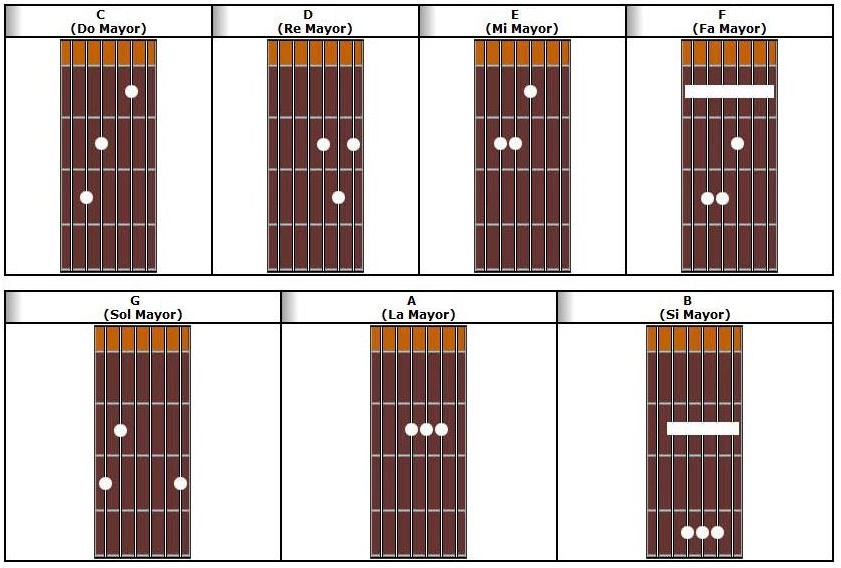
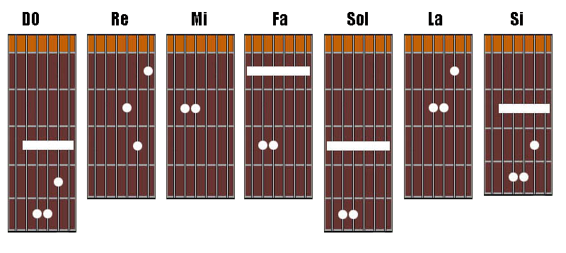

Lectura de notas y acordes
¿Porqué usamos letras para nombrar a las notas y acordes?
Por que utilizamos el sistema americano que es el que se usa internacionalmente para nombrar las notas y acordes. Aprendiendo éste sistema podremos leer cualquier música escrita para cualquier instrumento. Además, todas las canciones que podamos hallar en la Web se manejan por éste método.
Las siete notas musicales son:
DO - RE - MI - FA - SOL - LA - SI
En el sistema americano de notación éstas 7 notas toman el nombre de las 7 primeras letras del alfabeto, pero empezando por la nota LA que es la que sirve de base para la afinación de todos los instrumentos.
Tienes que memorizar esto:
| A = LA | E = MI |
| B = SI | F = FA |
| C = DO | G = SOL |
| D = RE | - |
Resto de la nomenclatura
| Símbolo | Significado |
|---|---|
| m | menor |
| # | sostenido |
| b | bemol |
| 7 | Séptimo |
| 9 | Noveno |
| Ejemplo | Significado |
|---|---|
| Gm | SOL menor |
| A# | LA sostenido |
| Dbm | RE bemol |
| Cm7 | DO menor Séptimo |
| F9 | FA Noveno |
En este modulo solo veremos los acordes mayores y menores; en las siguientes imágenes, las cuerdas están de la 6ta a la 1era de izquierda a derecha, y los trastes empiezan desde el primero en rojo (no se toma en cuenta el naranja).
Acordes mayores
Acordes menores
La tablatura
La tablatura es un método de representar la música por medio de diagramas que muestran al intérprete dónde poner los dedos en el diapasón del instrumento, en lugar de señalar el sonido y el ritmo que se producen como ocurre en la partitura.
Estructura de la Tablatura
Está integrada por 6 líneas que representa las seis cuerdas de la Guitarra. La línea de arriba representa la primera cuerda, o la más delgada de la Guitarra, mientras que la línea de abajo representa la sexta, o la más gruesa de la Guitarra. Una línea vertical indica el principio o final de un compás y la doble línea vertical indica el final de la tablatura. Como se puede ver en el ejemplo:
1ra. cuerda e |----------------------------------||
2da cuerda B |----------------------------------||
3ra. cuerda G |----------------------------------||
4ta. cuerda D |----------------------------------||
5ta. cuerda A |----------------------------------||
6ta. cuerda E |----------------------------------||
Las pisadas
Los números que encontremos sobre cada línea indican el espacio en donde se debe pisar la cuerda con los dedos de la mano izquierda, y tocarla con la mano derecha. Por ejemplo, si el número 3 ésta sobre la 2da. línea, significa que debemos tocar (hacer sonar) la 2da. cuerda pisada en el 3er. espacio (o traste). El "0" (cero) indica que se debe tocar la cuerda al aire (sin pisarla).
1ra. cuerda e |----------------------------------||
2da cuerda B |----------------------------------||
3ra. cuerda G |-----3----------------------------||
4ta. cuerda D |----------------------------------||
5ta. cuerda A |----------------------------------||
6ta. cuerda E |----------------------------------||
La siguiente tablatura te indica que debes tocar una secuencia de notas, en esta caso la escala de Do mayor. Las notas son Do, Re, Mi, Fa, Sol, La, Si y Do (C, D, E, F, G, A, B, C):
|-----------------------------------------||
|-----------------------------0---1------||
|---------------------0---2--------------||
|--------0---2---3----------------------||
|------3----------------------------------||
|------------------------------------------||